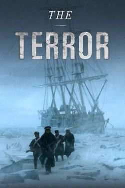
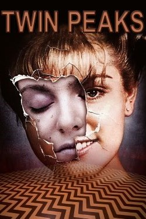
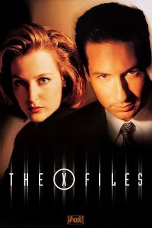

I watch too much television.
Sitcom set in a bookshop run by a misanthropic alcoholic. It
reminds me of the knick-nack shop where my mom worked when I was
little.
Unique supernatural drama set during the Great Depression. Sadly,
it was cancelled before it got a proper ending.
Black comedy anthology series set mainly in Minnesota. Based on my
favourite Coen Brothers movie.
Hilarious parody of 80s horror. It's got Richard Ayoade and Matt
Berry, both of whom I love.
Surreal sketch comedy show. I think everyone was watching this
during the pandemic.
Dark comedy/horror anthology that is a bit hard to describe as
each episode varies in theme and tone, but I strongly recommend
it!
Cheesy fantasy fun from the creator of Xena. Based on the Sword of
Truth by Terry Goodkind, which I'm not a fan of, but very
different.
Drama set in a 1960s ad agency. I dislike almost every character,
but I'm still very invested in their stories.
Sci-fi thriller with an absolutely incredible performance by
Tatiana Maslany, who plays several different characters.
My mom often had this show on in the background when I was little,
and now it's always the show I put on when I need comfort.
While I've watched TNG more times, this is my favourite Star Trek
series. It's a bit darker, with more of an overall story.

My all-time favourite show. The first season covers the horror and
tragedy of the 1830s Franklin expedition in the Canadian arctic.
Surreal comedy starring Matt Berry. Also has some of his music,
which is really good!

Dreamy, surreal, mystery. Beautiful setting and music. I also
really liked The Return, though a lot of people I know hated it.
Another comedy with Matt Berry, this time about vampires!
Gay warrior women! One of the first things I remember watching on
TV as a kid, and I still love it today!

I also watched this a lot as a kid and developed a fear of space
and a love for redheaded women as a result.
Chaotic, slapstick sitcom from the 80s with puppets and musical
guests.
I don't watch much anime.